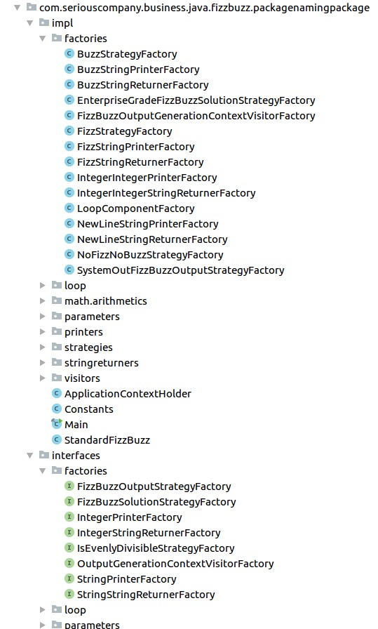

Item 27: Use abstraction to protect code against changes
Walking on water and developing software from a specification are easy if both are frozen – Edward V Berard ; Essays on object-oriented software engineering, p. 46
When we hide actual code behind abstractions like functions or classes, we do not only protect users from those details, but we also give ourselves the freedom to change this code later. Often without users even knowing about it. For instance, when you extract a sorting algorithm into a function, you can later optimize its performance without changing the way it is used.
Thinking about the car metaphor mentioned before, car manufacturers and mechanics can change everything under the hood of the car, and as long as the operation remains the same, a user won’t notice. This provides manufacturers the freedom to make more environment-friendly cars or to add more sensors to make cars safer.
In this item, we will see how different kinds of abstractions give us freedom by protecting us from a variety of changes. We will examine three practical cases, and in the end, discuss finding a balance in a number of abstractions. Let’s start with the simplest kind of abstraction: constant value.
Constant
Literal constant values are rarely self-explanatory and they are especially problematic when they repeat in our code. Moving the values into constant properties not only assigns the value a meaningful name, but also helps us better manage when this constant needs to be changed. Let’s see a simple example with password validation:
fun isPasswordValid(text: String): Boolean {
if(text.length < 7) return false
//...
}
The number 7 can be understood based on context, but it would be easier if it would be extracted into a constant:
const val MIN_PASSWORD_LENGTH = 7
fun isPasswordValid(text: String): Boolean {
if(text.length < MIN_PASSWORD_LENGTH) return false
//...
}
With that, it is easier to modify the minimum password size. We don’t need to understand validation logic, but instead, we can just change this constant. This is why it is especially important to extract values that are used more than once. For instance, the maximum number of threads that can connect to our database at the same time:
val MAX_THREADS = 10
Once it is extracted, you can easily change it when you need. Just imagine how hard it would be to change it if this number was spread all over the project.
As you can see, extracting constant:
- Names it
- Helps us change its value in the future
We will see similar results for different kinds of abstractions as well.
Function
Imagine that you are developing an application and you noticed that you often need to display a toast message to a user. This is how you do it programmatically:
1 Toast.makeText(this, message, Toast.LENGTH_LONG).show()

We can extract this common algorithm into a simple extension function for displaying toast:
fun Context.toast(
message: String,
duration: Int = Toast.LENGTH_LONG
) {
Toast.makeText(this, message, duration).show()
}
// Usage
context.toast(message)
// Usage in Activity or subclasses of Context
toast(message)
This change helped us extract a common algorithm so that we don’t need to remember how to display a toast every time. It would also help if the way to display a toast, in general, was to change (what is rather unlikely). Though there are changes we are not prepared for.
What if we had to change the way we display messages to the user from toasts to snackbars (a different kind of message display)? A simple answer is that having this functionality extracted, we can just change the implementation inside this function and rename it.
fun Context.snackbar(
message: String,
length: Int = Toast.LENGTH_LONG
) {
//...
}
This solution is far from perfect. First of all, renaming the function might be dangerous even if it is used only internally8. Especially if other modules depend on this function. The next problem is that parameters cannot be automatically changed so easily, thus we are still stuck with the toast API to declare the message duration. This is very problematic. When we display a snackbar we should not depend on a field from Toast. On the other hand, changing all usages to use the Snackbar’s enum would be problematic as well:
fun Context.snackbar(
message: String,
duration: Int = Snackbar.LENGTH_LONG
) {
//...
}
When we know that the way the message is displayed might change, we know that what is really important is not how this message is displayed, but instead the fact that we want to display the message to a user. What we need is a more abstract method to display a message. Having that in mind, a programmer could hide toast display behind a higher-level function showMessage, which would be independent of the concept of toast:
fun Context.showMessage(
message: String,
duration: MessageLength = MessageLength.LONG
) {
val toastDuration = when(duration) {
SHORT -> Toast.LENGTH_SHORT
LONG -> Toast.LENGTH_LONG
}
Toast.makeText(this, message, toastDuration).show()
}
enum class MessageLength { SHORT, LONG }
The biggest change here is the name. Some developers might neglect the importance of this change saying that a name is just a label and it doesn’t matter. This perspective is valid from the compiler’s point of view, but not from a developer’s point of view. A function represents an abstraction, and the signature of this function informs us what abstraction this is. A meaningful name is very important.
A function is a very simple abstraction, but it is also very limited. A function does not hold a state. Changes in a function signature often influence all usages. A more powerful way to abstract away implementation is by using classes.
Class
Here is how we can abstract message display into a class:
class MessageDisplay(val context: Context) {
fun show(
message: String,
duration: MessageLength = MessageLength.LONG
) {
val toastDuration = when(duration) {
SHORT -> Toast.LENGTH_SHORT
LONG -> Toast.LENGTH_LONG
}
Toast.makeText(context, message, toastDuration)
.show()
}
}
enum class MessageLength { SHORT, LONG }
// Usage
val messageDisplay = MessageDisplay(context)
messageDisplay.show("Message")
The key reason why classes are more powerful than functions is that they can hold a state and expose many functions (class member functions are called methods). In this case, we have a context in the class state, and it is injected via the constructor. Using a dependency injection framework we can delegate the class creation:
@Inject lateinit var messageDisplay: MessageDisplay
Additionally, we can mock the class to test the functionality of other classes that depend on the specified class. This is possible because we can mock classes for testing purposes:
val messageDisplay: MessageDisplay = mockk()
Furthermore, one could add more methods to set up message display:
1 messageDisplay.setChristmasMode(true)
As you can see, the class gives us more freedom. But they still have their limitations. For instance, when a class is final, we know what exact implementation is under its type. We have a bit more freedom with open classes because one could serve a subclass instead. This abstraction is still strongly bound to this class though. To get more freedom we can make it even more abstract and hide this class behind an interface.
Interface
Reading the Kotlin standard library, you might notice that nearly everything is represented as an interface. Just take a look at a few examples:
listOffunction returnsList, which is an interface. This is similar to other factory methods (we will explain them in Item 33, Consider factory methods instead of constructors).- Collection processing functions are extension functions on
IterableorCollection, and returnList,Map, etc. Those are all interfaces. - Property delegates are hidden behind
ReadOnlyPropertyorReadWritePropertywhich are also interfaces. Actual classes are often private. Functionlazydeclares interfaceLazyas its return type as well.
It is common practice for library creators to restrict inner class visibility and expose them from behind interfaces, and there are good reasons for that. This way library creators are sure that users do not use these classes directly, so they can change their implementations without any worries, as long as the interfaces stay the same. This is exactly the idea behind this item - by hiding objects behind an interface we abstract away any actual implementation and we force users to depend only on this abstraction. This way we reduce coupling.
In Kotlin, there is another reason behind returning interfaces instead of classes - Kotlin is a multiplatform language and the same listOf returns different list implementations for Kotlin/JVM, Kotlin/JS, and Kotlin/Native. This is an optimization - Kotlin generally uses platform-specific native collections. This is fine because they all respect the List interface.
Let’s see how we can apply this idea to our message display. This is how it can look like when we hide our class behind an interface:
1 interface MessageDisplay {
2 fun show(
3 message: String,
4 duration: MessageLength = LONG
5 )
6 }
7
8 class ToastDisplay(val context: Context): MessageDisplay {
9
10 override fun show(
11 message: String,
12 duration: MessageLength
13 ) {
14 val toastDuration = when(duration) {
15 SHORT -> Toast.LENGTH_SHORT
16 LONG -> Toast.LENGTH_LONG
17 }
18 Toast.makeText(context, message, toastDuration)
19 .show()
20 }
21 }
22
23 enum class MessageLength { SHORT, LONG }
In return, we got more freedom. For instance, we can inject the class that displays toasts on tablets, and snackbars on phones. One might also use MessageDisplay in a common module shared between Android, iOS, and Web. Then we could have different implementations for each platform. For instance, in iOS and Web, it could display an alert.
Another benefit is that interface faking for testing is simpler than class mocking, and it does not need any mocking library:
1 val messageDisplay: MessageDisplay = TestMessageDisplay()
Finally, the declaration is more decoupled from usage, and so we have more freedom in changing actual classes like ToastDisplay. On the other hand, if we want to change the way it is used, we would need to change the MessageDisplay interface and all the classes that implement it.
Next ID
Let’s discuss one more example. Let’s say that we need a unique ID in our project. A very simple way is to have a top-level property to hold next ID, and increment it whenever we need a new ID:
1 var nextId: Int = 0
2
3 // Usage
4
5 val newId = nextId++
Seeing such usage spread around our code should cause some alerts. What if we wanted to change the way IDs are created. Let’s be honest, this way is far from perfect:
- We start at 0 whenever we cold-start our program.
- It is not thread-safe.
Supposing that for now we accept this solution, we should protect ourselves from change by extracting ID creation into a function:
1 private var nextId: Int = 0
2 fun getNextId(): Int = nextId++
3
4 // Usage
5 val newId = getNextId()
Notice though that this solution only protects us from ID creation change. There are many changes that we are still prone to. The biggest one is the change of ID type. What if one day we need to keep ID as a String? Also notice that someone seeing that ID is represented as an Int, might use some type-dependent operations. For instance use comparison to check which ID is older. Such assumptions might lead to serious problems. To prevent that and to let ourselves change ID type easily in the future, we might extract ID as a class:
1 data class Id(private val id: Int)
2
3 private var nextId: Int = 0
4 fun getNextId(): Id = Id(nextId++)
Once again, it is clear that more abstractions give us more freedom, but also make definitions and usage harder to define and to understand.
Abstractions give freedom
We’ve presented a few common ways to introduce abstraction:
- Extracting constant
- Wrapping behavior into a function
- Wrapping function into a class
- Hiding a class behind an interface
- Wrapping universal objects into specialistic
We’ve seen how each of those gave us different kinds of freedom. Notice that there are many more tools available. Just to name a few:
- Using generic type parameters
- Extracting inner classes
- Restricting creation, for instance by forcing object creation via factory method9
On the other hand, abstractions have their dark side. They give us freedom and split code, but often they can make code harder to understand and to modify. Let’s talk about problems with abstractions.
Problems with abstraction
Adding new abstractions requires readers of the code to learn or already be familiar with the specific concept. When we define another abstraction, it is another thing that needs to be understood in our project. Of course, it is less of a problem when we restrict abstractions visibility (Item 30: Minimize elements visibility) or when we define abstractions that are used only for concrete tasks. This is why modularity is so important in bigger projects. We need to understand that defining abstraction is having this cost and we should not abstract everything by default.
We can infinitely extract abstractions, but soon this will make more harm than good. This fact was parodied in the FizzBuzz Enterprise Edition project10 where authors showed that even for such a simple problem as Fizz Buzz11, one can extract a ridiculous amount of abstractions making this problem extremely hard to use and understand. At the time of writing this book, there are 61 classes and 26 interfaces. All that to solve a problem that generally requires less than 10 lines of code. Sure, applying changes at any level is easy, though on the other hand understanding what does this code do and how does it do it is extremely hard.

Abstractions can hide a lot. On the one hand, it is easier to do development when there is less to think about, on the other hand, it becomes harder to understand the consequences of our actions when we use too many abstractions.One might use the showMessage function thinking that it still displays toast, and we might be surprised when it displays a snackbar. One seeing that unintended toast message is displayed might look for Toast.makeText and have problems finding it because it is displayed using showMessage. Having too many abstractions makes it harder to understand our code. It can also make us anxious when we are not sure what are the consequences of our actions.
To understand abstractions, examples are very helpful. Unit test or examples in the documentation that shows how an element can be used, make abstractions more real for us. For the same reason, I filled this book with concrete examples for most ideas I present. It is hard to understand abstract descriptions. It is also easy to misunderstand them.
Where is the balance?
The rule of thumb is: Every level of complexity gives us more freedom and organizes our code, but also makes it harder to understand what is really going on in our project. Both extremes are bad. The best solution is always somewhere in between, and where is it exactly, it depends on many factors like:
- Team size
- Team experience
- Project size
- Feature set
- Domain knowledge
We are constantly looking for balance in every project. Finding a proper balance is almost an art, as it requires intuition gained over hundreds if not thousands of hours architecting and coding projects. Here are a few suggestions I can give:
- In bigger projects with more developers, it is much harder to change object creation and usage later, so we prefer more abstract solutions. Also, a separation between modules or parts is especially useful then.
- We care less about how hard creation is when we use a dependency injection framework because we probably only need to define this creation once anyway.
- Testing or making different application variants might require us to use some abstractions.
- When your project is small and experimental, you can enjoy your freedom to directly make changes without the necessity of dealing with abstractions. Although when it gets serious, change it as soon as possible.
Another thing that we need to constantly think about is what might change and what are the odds for each change. For instance, there is a very small chance that the API for toast display will change, but there is a reasonable probability that we will need to change the way we display a message. Is there a chance we might need to mock this mechanism? A chance that one day you will need a more generic mechanism? Or a mechanism that might be platform-independent? These probabilities are not 0, so how big are they? Observing how things change over the years gives us better and better intuition.
Summary
Abstractions are not only to eliminate redundancy and to organize our code. They also help us when we need to change our code. Although using abstractions is harder. They are something we need to learn and understand. It is also harder to understand the consequences when we use abstract structures. We need to understand both the importance and risk of using abstractions, and we need to search for a balance in every project. Having too many or too little abstractions would not be an ideal situation.